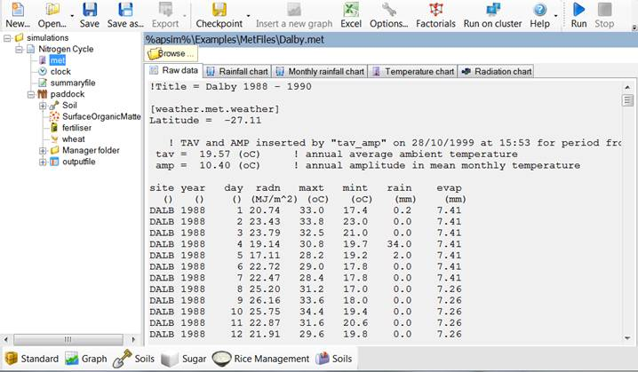
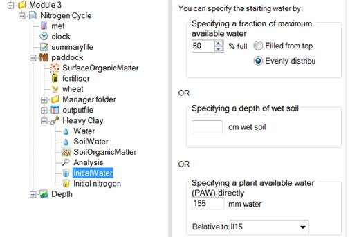
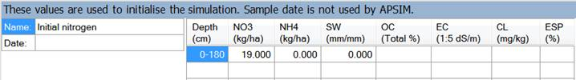
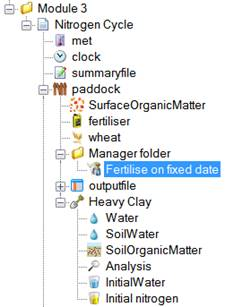
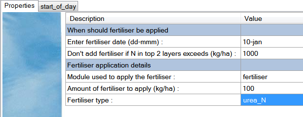
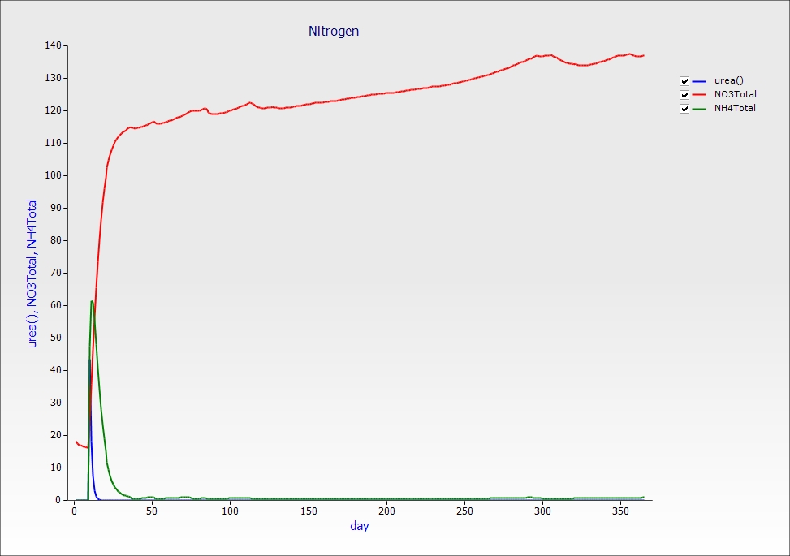
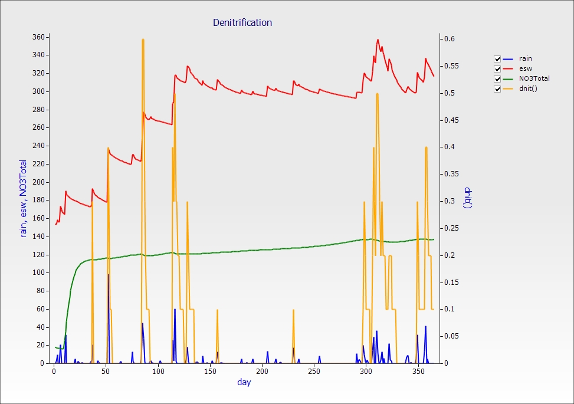
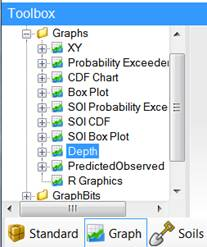
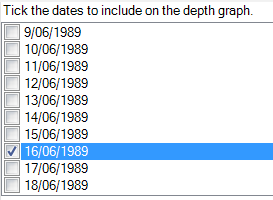
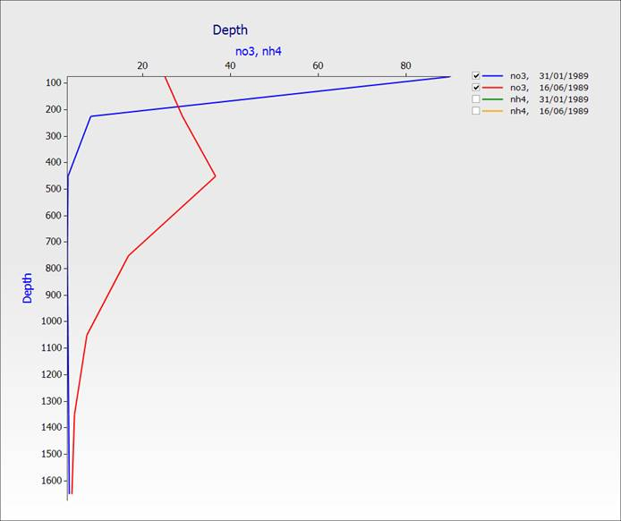

Exercise 3: Nitrogen Cycling
In this exercise you will observe the cycle of fertiliser nitrogen in a fallow situation; urea to ammonium, ammonium to nitrate and the loss of soil nitrate via denitrification. This simulation will introduce editing a simple Manager rule and to more advanced features of graphing simulation results.
1. Start a new simulation based on Continuous Wheat.apsim.
2. Rename the simulation to “Nitrogen Cycle”.
3. Save this file as Module3.apsim.
4. Click the met module and select Dalby weather (C:\Program Files(x86)\Apsim75\Examples\MetFiles\ by default).

5. Change the starting date to 1/1/1989 and the end date to 31/12/1989
6. Add the heavy clay soil from the Training toolbox (see module 1 if you're not sure how to do this).

7. Set starting water to 50% full, evenly distributed.
8. Set starting nitrogen to 19kg/ha NO3 and 0 NH4, evenly distributed. Don’t forget to change units to kg/ha (right click the column header). Make the depth equal to the entire soil profile (check Water node for the profile depth).

9. Make sure SurfaceOrganicMatter is set to 1000 kg/ha wheat.
10. Remove all manager scripts under the Manager folder, but leave the folder itself.
11. Drag a “Fertilise on fixed date” script to the Manager folder. You will find it in the Management toolbox under Manager (Common Tasks).

12. Change the fertiliser management parameters to apply 100 kg/ha of urea_N on 10-Jan. Leave the "Don't add fertiliser if N in top 2 layers exceeds (kg/ha)" property, and use the drop down box to set "Module used to apply the fertiliser" to "fertiliser".
13. Make sure you have a fertiliser component in your simulation. Even though it doesn’t have any changeable properties it’s needed to tell APSIM that you want to use fertiliser.

14. Remove all output Variables except Date (the first one). Enter the following variables into the outputfile Variable list:
|
Component
|
Variable Name
|
Comment
|
|
Already included
|
dd/mm/yyyy as Date
|
|
|
Clock
|
day
year
|
|
|
Met
|
rain
|
|
|
Soil (Heavy Clay)
|
dlayer
drain
esw
no3() as NO3Total
nh4() as NH4Total
no3
nh4
dnit()
urea()
|
Depth of each layer
Drainage
Extractable soil water
Some variables will output as an array. Each value in the array correspondes to a layer in the soil. Here we are summing the values over the profile to return one value then using an alias to rename the variable. We are also outputting the individual layers.
Denitrification summed over profile.
Urea summed over profile.
|
15. Change reporting frequency to end_day.
16. Run the simulation.
17. Create a graph of day vs urea, total ammonium and total nitrate, changing the name to Nitrogen. Set “Point type” to “None”.

18. Create a new graph of day vs rain, dnit(right axis), esw and NO3Total.

From this chart you can see that significant nitrogen is lost via denitrification when large amounts of nitrate are available in saturated soil conditions.
Exploring Vertical Movement of Nitrate Through the Soil Profile
Let's look at the distribution of nitrate through the soil profile at 21 days after fertilisation, and again at 5 months. We will create a depth plot to help visualise this. Depth plots require two values, the “dlayer” variable which holds the depth of each layer and at least one other layer variable. Layered variables are always held in arrays. This is why we included no3 and nh4 as layered variables and not just as totals.
1. Drag a depth graph from the Graph toolbox onto the simulation.

2. Expand the Plot node and click the Depth node.
3. We want to examine the profile on 31/01/1989 and 16/06/1989. Tick those two dates.

4. In the Plot node, add no3 and nh4 as the X variable. Leave the Y variable as Depth.
5. Click on the graph and untick the two nh4 lines so we can see nitrate only.

You can see the distribution of nitrate in the soil profile 21 days after the addition of fertiliser and at 5 months. Note that the nitrogen has moved down through the soil.